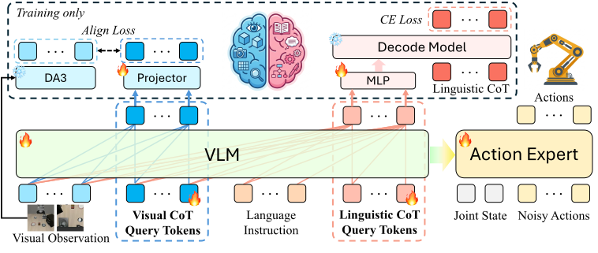
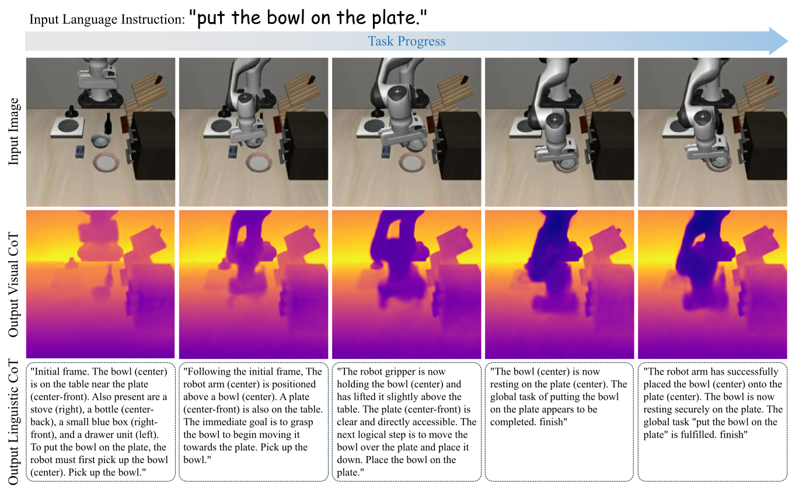

Real-World Experiments
DualCoT-VLA seamlessly transfers its robust task planning and 3D spatial perception to real-world environments.

Vision-Language-Action (VLA) models map visual observations and language instructions directly to robotic actions. While effective for simple tasks, standard VLA models often struggle with complex, multi-step tasks requiring logical planning, as well as precise manipulations demanding fine-grained spatial perception. Recent efforts have incorporated Chain-of-Thought (CoT) reasoning to endow VLA models with a "thinking before acting" capability. However, current CoT-based VLA models face two critical limitations: 1) an inability to simultaneously capture low-level visual details and high-level logical planning due to their reliance on isolated, single-modal CoT; 2) high inference latency with compounding errors caused by step-by-step autoregressive decoding. To address these limitations, we propose DualCoT-VLA, a visual-linguistic CoT method for VLA models with a parallel reasoning mechanism. To achieve comprehensive multi-modal reasoning, our method integrates a visual CoT for low-level spatial understanding and a linguistic CoT for high-level task planning. Furthermore, to overcome the latency bottleneck, we introduce a parallel CoT mechanism that incorporates two sets of learnable query tokens, shifting autoregressive reasoning to single-step forward reasoning. Extensive experiments demonstrate that our DualCoT-VLA achieves state-of-the-art performance on the LIBERO and RoboCasa GR1 benchmarks, as well as in real-world platforms.

Overview of DualCoT-VLA. The VLM backbone processes visual observations, language instructions, and two sets of learnable query tokens. Visual CoT aligns query hidden states with spatial features from Depth Anything 3; Linguistic CoT uses query hidden states as conditioning prefixes for an auxiliary LLM. During inference, auxiliary modules are discarded for efficient single-forward-pass action generation via a Flow-Matching DiT Action Expert.
Distills dense 3D spatial features from a frozen Vision Foundation Model (Depth Anything 3), enabling low-level spatial understanding without explicit decoding.
Aligns VLM representations with a frozen auxiliary LLM to internalize compressed logical planning within the continuous latent space for high-level task reasoning.
Two sets of learnable query tokens replace slow autoregressive decoding, enabling single-step forward reasoning with significantly reduced latency and compounding errors.
Visualization of Visual CoT and Linguistic CoT reasoning on manipulation tasks.

DualCoT-VLA achieves state-of-the-art performance on the LIBERO and RoboCasa GR1 benchmarks.
| Method | Spatial | Object | Goal | Long | Average |
|---|---|---|---|---|---|
| Diffusion Policy | 78.5 | 87.5 | 73.5 | 64.8 | 76.1 |
| OpenVLA | 84.7 | 88.4 | 79.2 | 53.7 | 76.5 |
| PD-VLA | 95.5 | 96.7 | 94.9 | 91.7 | 94.7 |
| π₀ | 98.0 | 96.8 | 94.4 | 88.4 | 94.4 |
| π₀-Fast | 96.4 | 96.8 | 88.6 | 60.2 | 85.5 |
| π₀.₅ | 98.8 | 98.2 | 98.0 | 92.4 | 96.9 |
| GR00T-N1 | 94.4 | 97.6 | 93.0 | 90.6 | 93.9 |
| GR00T-N1.6 | 97.7 | 98.5 | 97.5 | 94.4 | 97.0 |
| OpenVLA-OFT | 97.6 | 98.4 | 97.9 | 94.5 | 97.1 |
| CoT-VLA | 87.5 | 91.6 | 87.6 | 69.0 | 83.9 |
| ThinkAct | 88.3 | 91.4 | 87.1 | 70.9 | 84.4 |
| DeepThinkVLA | 96.6 | 99.0 | 96.4 | 96.2 | 97.0 |
| Fast-ThinkAct | 92.0 | 97.2 | 90.2 | 79.4 | 89.7 |
| LaRA-VLA | 96.4 | 98.6 | 99.8 | 96.6 | 97.9 |
| DualCoT-VLA (Ours) | 99.4 | 99.8 | 97.8 | 98.2 | 98.8 |
| Task | GR00T-N1.5 | GR00T-N1.6 | Qwen3GR00T | Qwen3PI | Qwen3OFT | Qwen3FAST | DualCoT-VLA (Ours) |
|---|---|---|---|---|---|---|---|
| Cabinet / Microwave Tasks | |||||||
| BottleToCabinetClose | 54.0 | 51.5 | 46.0 | 26.0 | 30.0 | 38.0 | 66.0 |
| CanToDrawerClose | 50.0 | 13.0 | 80.0 | 62.0 | 76.0 | 44.0 | 64.0 |
| CupToDrawerClose | 38.0 | 8.5 | 54.0 | 42.0 | 44.0 | 56.0 | 46.0 |
| MilkToMicrowaveClose | 60.0 | 14.0 | 48.0 | 50.0 | 44.0 | 44.0 | 58.0 |
| PotatoToMicrowaveClose | 32.0 | 41.5 | 28.0 | 42.0 | 32.0 | 14.0 | 30.0 |
| WineToCabinetClose | 38.0 | 16.5 | 46.0 | 32.0 | 36.0 | 14.0 | 38.0 |
| Cuttingboard Tasks | |||||||
| CuttingboardToBasket | 38.0 | 58.0 | 48.0 | 40.0 | 50.0 | 54.0 | 44.0 |
| CuttingboardToCardboardbox | 46.0 | 46.5 | 40.0 | 46.0 | 40.0 | 42.0 | 54.0 |
| CuttingboardToPan | 58.0 | 68.5 | 68.0 | 60.0 | 70.0 | 58.0 | 80.0 |
| CuttingboardToPot | 62.0 | 65.0 | 52.0 | 40.0 | 54.0 | 58.0 | 64.0 |
| CuttingboardToTieredbasket | 28.0 | 46.5 | 56.0 | 44.0 | 38.0 | 40.0 | 46.0 |
| Placemat Tasks | |||||||
| PlacematToBasket | 30.0 | 58.5 | 42.0 | 44.0 | 32.0 | 36.0 | 48.0 |
| PlacematToBowl | 60.0 | 57.5 | 44.0 | 52.0 | 58.0 | 38.0 | 58.0 |
| PlacematToPlate | 56.0 | 63.0 | 48.0 | 50.0 | 52.0 | 42.0 | 74.0 |
| PlacematToTieredshelf | 36.0 | 28.5 | 18.0 | 28.0 | 24.0 | 18.0 | 26.0 |
| Plate Tasks | |||||||
| PlateToBowl | 52.0 | 57.0 | 60.0 | 52.0 | 60.0 | 52.0 | 50.0 |
| PlateToCardboardbox | 48.0 | 43.5 | 50.0 | 40.0 | 50.0 | 30.0 | 56.0 |
| PlateToPan | 60.0 | 51.0 | 54.0 | 36.0 | 66.0 | 48.0 | 70.0 |
| PlateToPlate | 52.0 | 78.7 | 70.0 | 48.0 | 68.0 | 50.0 | 76.0 |
| Tray Tasks | |||||||
| TrayToCardboardbox | 32.0 | 51.5 | 38.0 | 34.0 | 44.0 | 28.0 | 52.0 |
| TrayToPlate | 58.0 | 71.0 | 56.0 | 64.0 | 56.0 | 34.0 | 64.0 |
| TrayToPot | 44.0 | 64.5 | 50.0 | 44.0 | 62.0 | 46.0 | 70.0 |
| TrayToTieredbasket | 60.0 | 57.0 | 36.0 | 50.0 | 54.0 | 36.0 | 60.0 |
| TrayToTieredshelf | 64.0 | 31.5 | 16.0 | 28.0 | 30.0 | 16.0 | 28.0 |
| Average | 48.2 | 47.6 | 47.8 | 43.9 | 48.8 | 39.0 | 55.1 |
Bold: best result Underline: second best
DualCoT-VLA seamlessly transfers its robust task planning and 3D spatial perception to real-world environments.